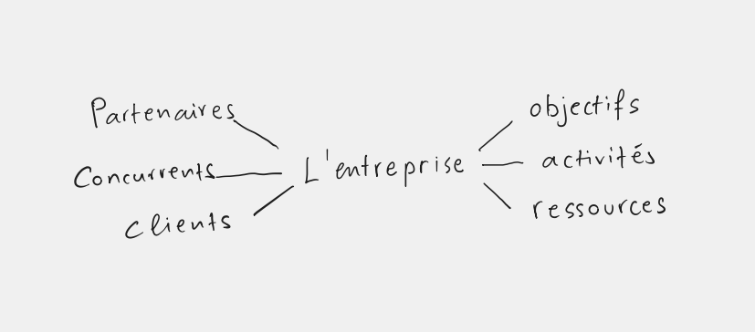
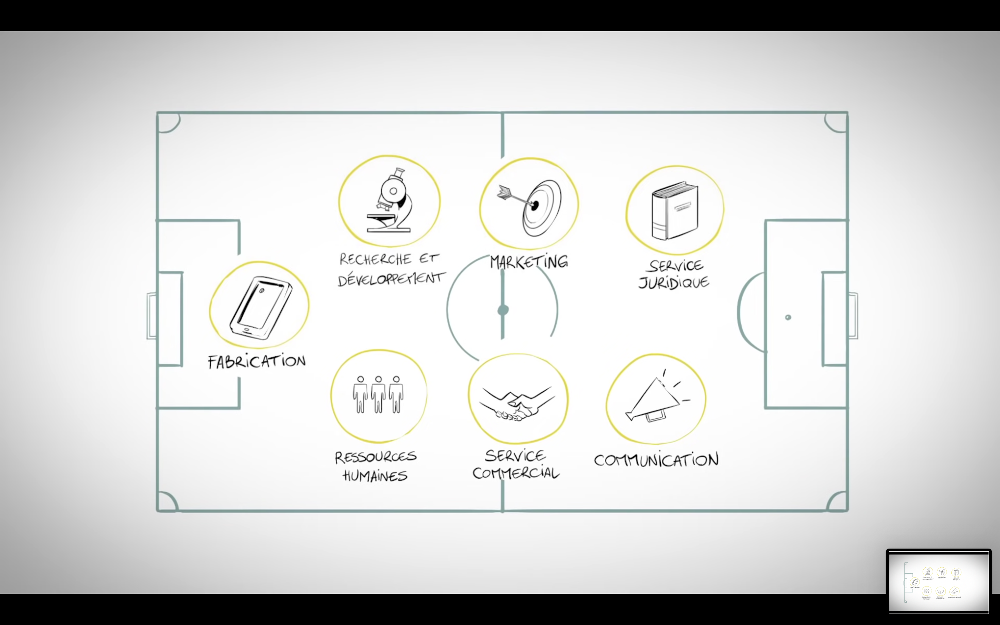
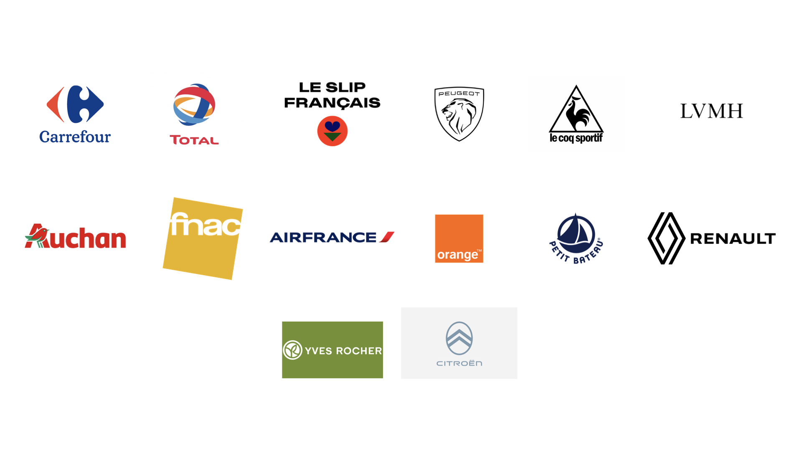

Qu’est-ce qu’une entreprise? (Activités à faire en classe)
Diagramme

Une entreprise est une organisation qui produit des biens ou des services pour répondre à des besoins des clients et réaliser un profit. Elle se trouve ainsi au milieu d’un écosystème dans lequel elle doit trouver son équilibre et prospérer.
Il y a d’un côté ses objectifs stratégiques qui définissent ses activités et lui permet de gérer ses ressources et de l’autre côté ses partenaires ses concurrents et ses clients qui l’aident à se développer et à trouver sa place dans le marché.
Vocabulaire utile
Le classement des entreprises
Quels sont les deux critères les plus courants de classement des entreprises?
L’organisation d’une entreprise

Dans la la vidéo Martin décrit l’ensemble des activités de son entreprise avec 7 fonctions en commençant par la fabrication.
Fiche d’identité
En tant que consommateurs, des entreprises on connaît souvent leurs logos (leur identité visuelle) et bien sûr leurs produits. Mais il est rare de connaître la fiche complète de leur identité. La fiche d’identité d’entreprise rassemble des informations concernant le fonctionnement d’une l’entreprise, son activité ainsi que son nom légal et ses coordonnées.

Malgré la grande diversité du monde des entreprises, quelques éléments communs constituent la trame d’une fiche d’identité de société. La plupart de ces informations sont disponibles gratuitement sur Internet (voir par exemple le site verif.com). Aux informations de cette liste, on peut également ajouter l’identité visuelle d’une entreprise, notamment son logo.
On y trouvera la plupart du temps :
- le nom de la société
- sa forme juridique
- son numéro SIRET ou SIREN et code NAF
- la date de sa création
- l’adresse de son siège social
- ses coordonnées : numéro de téléphone, email et site Internet
- son secteur d’activité
- son implantation et son rayonnement en France
- le nombre de salariés
- son chiffre d’affaires annuel
- les projets en cours ou à venir
Voici un exemple de fiche d’identité de l’entreprise JCDecaux:
- Nom de la société : JCDECAUX France
- Forme juridique : SAS
- Numéro SIRET : 622 044 501 00139
- Code NAF : 7312Z / Régie publicitaire de médias
- Date de sa création : 01/07/1984
- Adresse de son siège social : Avenue Sainte Apolline – 78370 Plaisir et Ventes / Marketing au 17 rue Soyez – 92200 Neuilly-sur-Seine
- Coordonnées : https://www.jcdecaux.fr et 01 30 79 79 79
- Secteur d’activité : Publicité et études de marché
- Implantation et rayonnement : leader en France et présent dans 80 pays
- Nombre de salariés : 3 800 en France
- Chiffre d’affaires annuel : 3 890,2 M€ en 2019
Discussion
2 Tâche qu’on exécute en vertu d’un contrat.